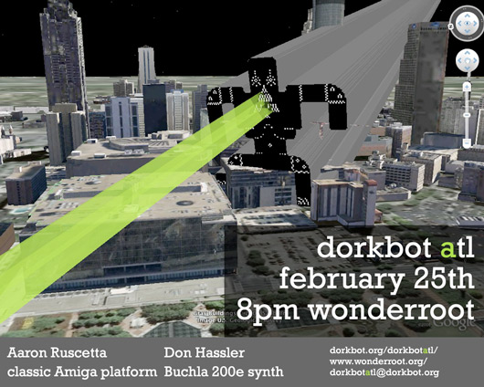

8 p.m. at WonderRoot (directions)

Speakers: Don Hassler and Aaron Ruscetta
Don Hassler,
Sound work with the Buchla 200e system
Don Hassler is a long time electronic art enthusiast who'll be introducing a small Buchla 200e system, demonstrating it's features, and how he uses it in his work.
Don was involved with the now gone Atlanta College of Art for 21 years, assisting painting instructor William Nolan develop an experimental sound class geared for non-musician visual arts students. Through his involvement with the college, Don expanded his work to include interactive, site-specific sound sculptures.
Throughout this time Don continued to work with musicians including local Atlanta electronic music pioneers Dick Robinson, Howard Wershil, Richard Devine, Graham Moore, Tom Smith (To Live and Shave in LA) and, including participating in a Fluxus performance led by Dick Higgins in 1987. He also worked electronics designer Timothy Adams, assisting in the design of Tim’s Chaos/Difference box for Pauline Oliveros and Dick Robinson.
In 1987, Don began to serve as a US representative for the long running British synthesizer company EMS, and much later on very briefly with the California electronic music collective EAR-Group and functioning US service support for the Swedish electronic music instrument company Elektron. Today Don works at the Art Institute of Atlanta.
Don’s work today centers in abstract interpretations, both in performance and recording of his surroundings and perceptions still using materials drawn from combined areas of computer and analog audio, as well as occasional diy electronics.
Aaron Ruscetta,
The Amazing Amiga: Computo Erectus
Synopsis:
In the brief history of digital gadgetry and gaming, no techno toy
or dork device has garnered a more fervent fan base of mega
geeks than the amazing Amiga, the computer systems that set
the standards and directions for the entire desktop computing
industry back in 1985. Though the platform zealotry of ardent
Amiganauts can make Mac maniacs and and Linux lunatics
seem tame, any technophile who has examined the genius of
the Amiga architecture and operating system or used any of the
hundreds of ground breaking games, gadgets and multi media
softwares that it inspired knows that the loyalties are exceedingly
deserved and can see why Amiga is still surviving and evolving
today in various niche environments.
This talk, hopefully the first in a series examining the Amiga and the dozens of cool geek gadgets and innovations it spawned, will be an introductory and historically contextualized look at the original 1985 Amiga 1000 computer, its multi processor, multi media hardware architecture and the priority preemptive, multi-tasking, message based Exec Operating System that made all the bits and pieces sing and dance together.
Bio:
Aaron Ruscetta has enjoyed a long and geeky career as a technical
artisan in the fields of television, audio and digital media production.
Throughout this, he has been continually involved with and learning
from the art, electronics and computer communities that have been
integral to his work. Being a technocrat with a front row seat to the
evolution of digital media technology and personal computing,
he has also become a broadly informed historian of the computer
and internet revolutions.
In 1987 Aaron bought his first Amiga system and became an active member of the Amiga Atlanta users group, variously serving over the years as Secretary, VP, Treasurer, President and Video SIG leader (earning him the endearing title of Videot Savant). Learning the Amiga also furthered his career efforts, facilitating several years working as an adjunct instructor of Computer Arts and Graphics or 3D Modeling and Animation at the Atlanta College of Art, plus a couple of years creating and marketing software and hardware products supporting the Amiga Video Toaster. At current count, he has 24 Amiga systems in his basement, owning at least one of every model made. In 1998 he found GNU Linux had finally become more capable than his aging Amiga's and he moved on to become an evangelist in the Free Software community, where he now serves as First Contact and Event Coordinator tor the Atlanta Linux Enthusiasts User Group.